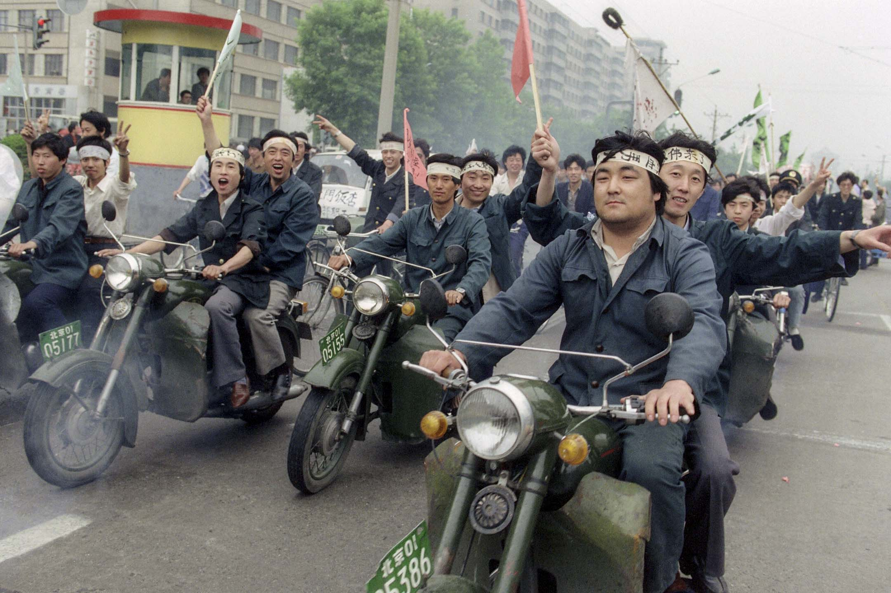
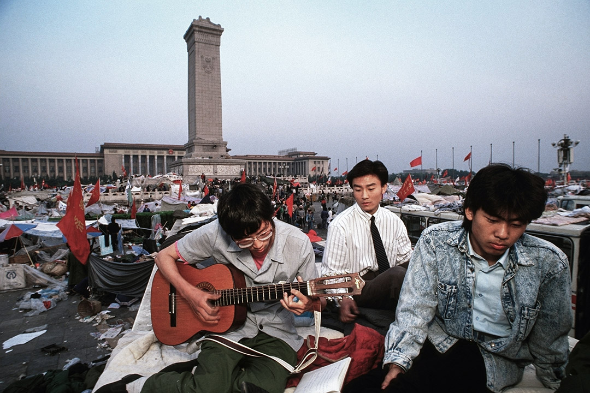
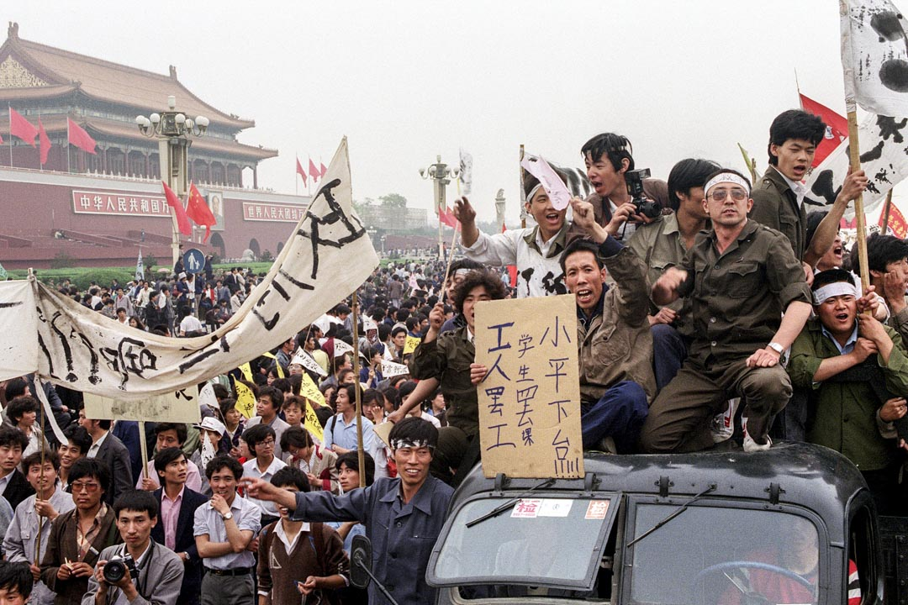
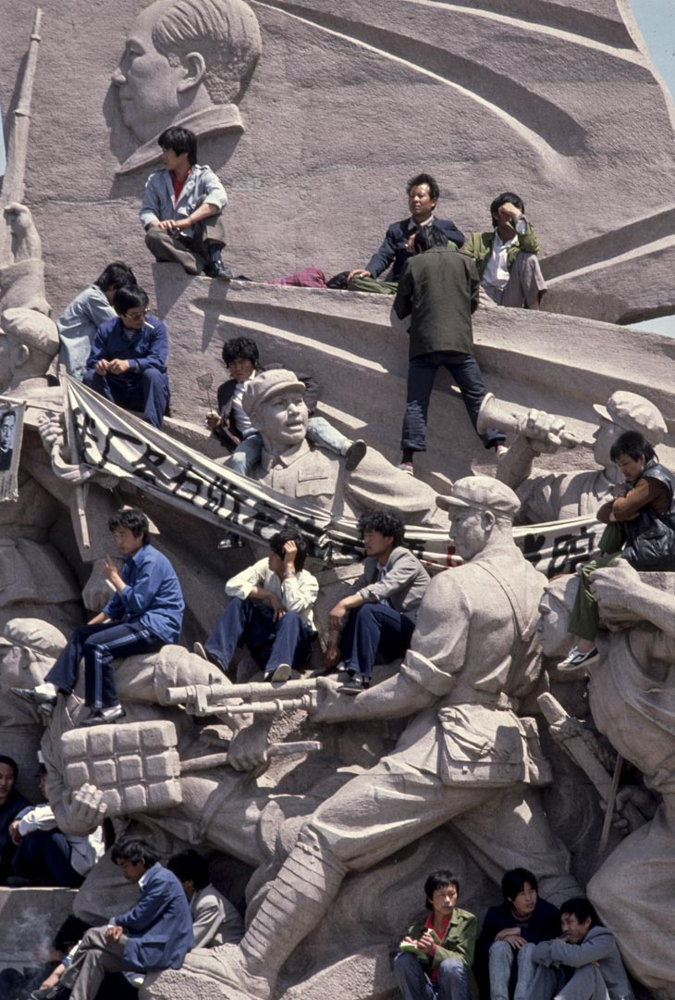
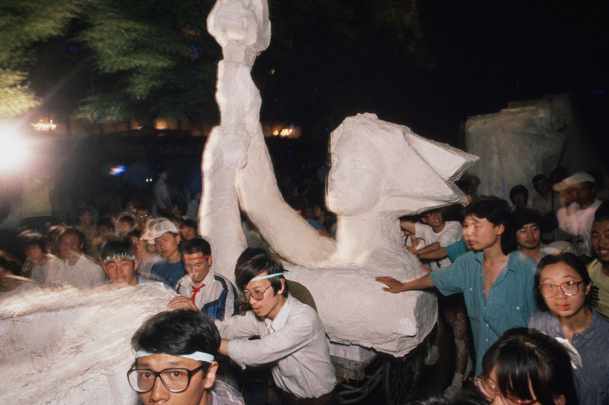

邊緣化的六四論述：八九春夏，其實發生的是「兩場運動」
Table of Contents
對於六四運動的深入理解，需要我們同時跳出這兩種敘事：既告別「知識分子中心論」、重視工人和市民的參與，同時承認「民主」的確是工人和市民參與運動的核心訴求。最關鍵的是，工人與市民所理解的「民主」，和學生、知識分子所擁抱的民主觀念有很大不同。

Figure 1: 1989年5月18日，工人在北京街道以電單車遊行聲援天安門廣場絕食的學生。攝：Catherine Henriette/AFP/Getty Images
吉漢
刊登於 2019-05-29
關 於六四運動的歷史敘事，比較常見的是兩種版本。其中最為主流的版本，當然是把運動放在「民主vs威權」的框架下來理解。這一敘事中的「民主」，往往指的是 自由主義意義上的民主。80年代，中共逐漸告別「階級鬥爭」的傳統話語，開始走一條重視經濟發展的務實路線。市場化改革伴隨着思想和言論領域的放鬆，西方 自由主義思潮開始在大陸青年與知識分子中流行。隨着知識分子對歐美自由主義民主制度的了解加深，自由民主價值的實現也成了知識分子和青年學生的期望所在。
然而令知識分子和學生們感到失望的是，80年代中共政治改革、政治自由化的進展遠遠滯後於市場化經濟改革，而且幾次出現倒退-–—其中最為明顯的，就 是1983年「清除精神污染」運動和1987年對以「放開民主選舉」為主要訴求的一波高校學生運動的鎮壓，這次鎮壓直接導致了時任中共總書記的開明派領導 人胡耀邦下台。在這一敘事中，這些受西方自由主義影響的青年學生和知識分子們，逐漸累積的不滿終於在1989年胡耀邦逝世後徹底爆發，他們走上街頭，希望 當局加速推進此前頻頻受阻的政治自由化進程，從而讓政治改革和經濟改革齊頭並進。
而另一種講述六四運動的敘事，則是將運動放在「社會主義vs資本主義」的框架下理解。這一敘事在公共輿論中的影響力雖然遠遠不及第一種，但在一些特 定的左翼社群-–—比如中國大陸的一部分毛主義左翼、西方的一部分反斯大林主義左翼-–—中頗為流行。在這一敘事中，1980年代的一系列市場化改革將中國從 社會主義計劃經濟帶入資本主義市場經濟，這一變革過程帶來嚴重的通貨膨脹和貧富差距的急速擴大，也造成了大量腐敗問題，降低了城市人口的生活水平。和「民 主vs威權」敘事不同，「社會主義vs資本主義」的敘事認為學生、工人、市民不滿的真正原因是市場化改革所造成的一系列經濟亂象，這些不滿聚焦為對腐敗官 員的憤怒。
在這一敘事看來，六四運動是一場由經濟訴求引發的反市場化改革、反資本主義運動。它的核心訴求並不是民主，而是反對市場化改革和資本主義轉型所帶來 的一系列弊端。「反腐敗」、「反官倒」、「控制通貨膨脹」的口號的確在1989年春夏之交的遊行和集會中隨處可見，也是學生代表和政府官員對話時提出的核 心訴求；學生、工人、市民只是希望當局解決腐敗、官倒（官員利用政治權力在市場中倒買倒賣）、貧富差距擴大、通貨膨脹失控的問題，這一希望並不意味着參與 運動的人們都支持以「民主」為核心的政治改革。這一敘事背後隱含的一層預設是，既然運動抗議的對象是鄧小平時代經濟改革所帶來的一系列亂象，那麼運動參與 者的憤怒中也必然帶有對於經濟改革之前的那個時代-–—毛澤東時代-–—的些許懷念。
這兩種敘事在很大程度上都是有問題的。在「民主vs威權」的敘事中，運動的主角幾乎永遠是學生和知識分子，嚴重忽略了同樣踴躍參與運動、在運動中扮 演重要角色的工人和市民。事實上，不管是從六月三日晚上、六月四日凌晨清場的死傷狀況看，還是從運動過後當局的鎮壓力度看，工人、市民所付出的代價都要遠 遠大於知識分子和學生。這一局面和1980年韓國光州運動相似。而在「民主vs威權」的敘事裏，工人和市民幾乎完全失去位置。
「社會主義vs資本主義」的敘事雖然提及了工人和市民在運動中的角色，但完全不能解釋關於這場運動的最基本事實：對於「民主」的訴求，毫無疑問是這 場運動的核心主題，這不是「反資本主義」、「反市場化改革」可以概括的。更何況，雖然對於市場化改革的不滿確實是刺激工人和市民參與運動的重要因素，但在 運動中幾乎沒有出現任何對於毛時代或者毛本人的懷念。換句話說，參與運動的許多人固然對市場化改革帶來的後果不滿，但他們所希望的，並不是簡單倒退到市場 化改革之前的時代，也不是僅僅希望當局解決具體的經濟問題，而是用一種全新的、系統的政治想像，提出了既拒斥社會主義計劃經濟也拒斥市場化改革的替代方 案。
對於六四運動的深入理解，需要我們同時跳出這兩種敘事：既告別「知識分子中心論」、重視工人和市民的參與，同時承認「民主」的確是工人和市民參與運 動的核心訴求。最關鍵的是，工人與市民所理解的「民主」，和學生、知識分子所擁抱的民主觀念有很大不同：那是一種突出工人階級主體性的社會主義民主（後文 會詳細介紹這種社會主義民主的想像）。作為工人階級爭取社會主義民主的運動，六四的這一維度極為重要、卻又極容易被忽略。
八九中的工人運動
當局對工人的鎮壓烈度遠遠大於對學生的鎮壓-–—這一事實既被歷史學家邁斯納（Maurice Meisner）的研究和吳仁華的《天安門血腥清場內幕》所記錄，也被我訪談的六四親歷者所證實。
學者魏昂德（Andrew Walder）和龔小夏在1993年發表的一項研究， 以「北京工人自治聯合會」（簡稱「工自聯」）為線索，深入梳理了工人、市民參與六四運動的過程。在胡耀邦於1989年4月15日逝世之後，各大高校的學生 開始在校園內為胡耀邦設立靈堂。與此同時，開始有工人和市民三三兩兩地聚集在天安門廣場人民英雄紀念碑附近，交換對於時局的看法。此後幾天，工人和市民的 聚集人數增多，達到數十人。在「新華門事件」之後，被警方粗暴對待學生所激怒的少數工人決定成立一個組織，這便是「工自聯」的前身。也就是說，「工自聯」 的成立還要比「北京高校學生自治聯合會」（簡稱「高自聯」）早幾天。
然而，彼時的「工自聯」只是幾十人組成的非正式組織，既沒有公開活動，也沒有成型的組織結構，甚至成員彼此之間也不熟悉。在四月份，運動的節奏一直 牢牢掌握在學生手裏。從4月17日的天安門廣場遊行、到隨後的「新華門事件」、到4月22日胡耀邦葬禮當天的遊行、再到4月27日抗議《人民日報》「四二 六社論」的十萬學生大遊行、最終到5月4號更大規模的紀念五四遊行，這一系列示威活動的參與者基本完全由學生組成。

Figure 2: 1989年6月1日，北京留守天安門的示威學生在廣場彈吉他。
然而5月4日之後，學生運動轉入低潮，大多數學生不知道下一步何去何從，也對運動的進一步升級心懷疑慮。許多學生結束了罷課。在運動面臨停滯不前的 困境下，一部分較為激進的學生開始計劃絕食行動，希望藉此將參與熱情維繫下去、把運動推向新的高潮。在這個意義上，絕食的學生也的確實現了他們的目標。5 月13日，數百名學生絕食的第一天，天安門廣場上參與示威的人數多達30萬，創下了運動開始以來的記錄。
絕食的開始，對這場運動的走向來說，是一個意義重大的轉折點。大多數學生的參與熱情雖然在短時間內再次被點燃，但還是不可避免地繼續衰落下去。在5 月13日之後，學生的參與整體上不斷下跌，逐漸顯露出頹勢，越來越多人從廣場上撤回。然而，學生絕食行動前所未有地激發了工人和市民的參與。普通工人的熱 情，不僅體現在參與人數上，更體現在工人開始自發組織他們自己的示威遊行、打出他們自己的橫幅和標語。工人逐漸成為運動的主力。刺激工人大規模參與運動 的，既有對於絕食學生的樸素的同情心-–—或者說「心疼」-–—也有對於政府在絕食學生面前不為所動的道德義憤。用我所訪談的一位參與運動的北京工人的話說， 他只是覺得「政府這麼欺負學生太過分了」。隨着工人蔘與人數的暴增，「工自聯」開始在五月中旬公開活動，大範圍招募會員。
進一步刺激工人參與運動的，則是5月20日戒嚴令的頒布。在軍隊浩浩蕩蕩地從四面八方開進北京城的時候，無數工人和市民自發在城市外圍的各個地方阻 攔軍隊進城。他們排成人牆、堆起路障，阻止軍隊進一步前進。他們給士兵們提供食物和補給，和士兵建立友誼和信任，動之以情、曉之以理，勸說士兵們放下武 器。換句話說，在戒嚴開始、局勢的危險程度大大增加之際，敢於和最為強力的國家暴力機關正面對抗和交涉的，不是學生，而是工人。而工人們也確實取得了暫時 的勝利：軍隊進城的步伐被阻攔了。
歷史學者吳仁華在《天安門血腥清場內幕》中也回憶說：「在八九民主運動中，最具有道德勇氣、犧牲最慘重的不是學生，更不是知識界人士，而是北京市的 工人弟兄和市民。為了保衞天安門廣場，保護天安門廣場上和平請願的學生，他們一直在用血肉之軀阻擋着武裝到牙齒的解放軍戒嚴部隊，浴血奮戰，奮不顧身。」
用德國共產主義運動領袖羅莎·盧森堡的話說，工人階級的鬥爭意識是在鬥爭過程中不斷培養起來的。 六四運動也印證了這一點。在阻擋軍隊進城的過程中，工人們逐漸意識到他們自發的組織和行動當中所藴含的巨大能量。這像是一種前所未有的自我解放。一大波 「自我組織」的浪潮開始了。根據魏昂德和龔小夏提供的數字，從五月中旬開始，工自聯的成員人數開始暴增，到六月上旬已經多達兩萬人。與此同時，其他各式各 樣的工人組織也如雨後春筍一般湧現。
組織的發展帶來行動的激進化。工人們開始組織各種「糾察隊」、「敢死隊」等等帶有自我武裝性質的類民兵組織，以便及時觀察、傳遞軍方的動向，同時維 持城市治安、不給軍方鎮壓提供藉口。魏昂德與龔小夏的論文也指出了這一點。我曾經訪談的一位運動親歷者回憶說，工人開始阻攔軍車的一週之後，光是長安街西 向延長線北側（也就是木樨地、軍事博物館北側）的月壇、甘家口一帶，就活躍着十幾個工人糾察隊。工人們三班倒或者四班倒，及時觀察社區和街道上的情況、幫 助維持秩序。我曾經訪談的另一位運動親歷者說，這時候的北京幾乎成了一座工人和市民自我管理的城市。這讓人不由想起在1917年，俄國二月革命和十月革命 中間那段時間，俄國工人階級成立的自我武裝組織。
同時，工人們開始在更多的街道上築起堡壘和工事。不少工廠的工人們開始有組織地發起罷工和磨洋工。鮑樸整理的《李鵬六四日記》也顯示，到五月底，已 經傳出消息說首都鋼鐵廠（「首鋼」）的十萬工人正在籌備罷工，令中共高層震動。首鋼是當時北京規模最大、最具標誌性的工業企業之一，一旦首鋼工人罷工，很 可能在整座城市掀起大規模的罷工潮。而且當時工自聯已經明確提出「籌備發起總罷工」的口號，不少工人着力在各個工廠之間建立聯繫，為總罷工做準備。
自我武裝、自我組織、發起罷工，這些行動的意義與示威、遊行、佔領不同。後者的意義主要是「自我表達」，而工人的這一系列行動，本質上是「自我賦 權」，是在日常生產和生活中取得控制生產、管理社會的權力。這些行動本身，就具有遠超出示威、遊行、佔領行動的激進性。這便是運動發展到五月底、六月初時 面臨的情形：學生的運動陷入瓶頸，規模滑坡、內鬥不斷；工人的運動卻在不斷升級的自我組織、自我動員中發展壯大，激進性與日俱增。
我們無從確證當局為何在6月初最終下定決心暴力清場。我認為，一種不無道理的猜測是：讓當局恐慌的不是已經顯露頹勢和敗相的學生運動，而是快速發 展、不斷激進化的工人運動；工人們的自我武裝、自我管理，以及總罷工的籌備，才是令當局真正害怕的。而清場當天與清場之後的種種行動也確實表明，當局對工 人的鎮壓烈度（人數和判刑）遠遠大於對學生的鎮壓-–—這一事實既被歷史學家邁斯納（Maurice Meisner）的研究和吳仁華的《天安門血腥清場內幕》所記錄，也被我訪談的六四親歷者所證實。
知識份子與工人的兩種民主想像
工人們對於「民主」的表述，是獨特的、不同於學生的。
在運動展開的一個多月中，話語權和媒體的注意力主要都集中在學生和知識分子身上。這在一定程度上是因為學生和知識分子的表達能力、外語能力、和媒體 互動的能力更強。相對學生而言，工人一直處在失語的位置上。而正如前文所討論的，工人們對於民主權力的追求，首先不是體現在他們的言說當中，而是體現在他 們的行動當中。用行動爭取權力的過程，本身就彰顯着工人們的主體性，本身就是一種激進的民主想像。
此外，雖然工人在參與運動過程中留下的言說和文字少於學生，但如果我們細細檢視這些言說，便會發現：工人們對於「民主」的表述，是獨特的、不同於學生的。

Figure 3: 1989年5月18日，超過一百萬中國工人湧入北京街頭，支持天安門民主運動。
從魏昂德和龔小夏對於「工自聯」傳單的分析來看，工人們首先關注的當然是與切身生計相關的經濟議題：通貨膨脹、貧富差距。這些市場化改革中出現的問 題，當然使得城市工人對市場化改革態度極為負面。然而，工人們並不是就經濟論經濟，而是為經濟議題提供政治化的解讀，並以此為基礎建立關於民主的論述。在 工人們看來，不管是通貨膨脹還是貧富差距，造成問題的根本原因都是官僚系統：「斯大林主義式」的「專制官僚」-–—這樣的詞語在工自聯的傳單中反覆出現。
在工自聯看來，之所以出現通貨膨脹，是因為控制生產定價和進口環節的官僚們故意把商品價格定高、從而在中間賺取利益。因此，解決通貨膨脹和貧富差距 問題的根本出路，是推翻官僚制、將產品的生產和流通過程控制在工人自己手上。這種以反官僚為基礎的民主論述，不禁讓人回憶起1966-1967年早期文革 運動中的工人造反派。
工人們對於官僚制危害的切身體驗，並非來自於在政治生活中缺少言論自由和選舉權，而是在工作場所中缺少話語權。「專制」的最徹底體現，是企業中的廠 長負責制。魏昂德和龔小夏所採訪的一位工自聯成員說到：「在車間裏面，是工人說的話管用，還是領導說的話管用？我們後來聊過這個。在工廠裏面，廠長就是獨 裁者，他說什麼就是什麼。如果你從工廠出發看這個國家，就能發現其實是一回事：一人專制。我們的目標並不高，就是希望工人能有自己的獨立組織。」
也就是說，參與運動的工人毫無疑問是在為民主奮鬥，但工人眼中的「民主」首先是工作場所的民主、是勞動權益的民主。工自聯對民主的論述，從始至終交 織着對官方工會系統（中華全國總工會）的批評，認為官方工會無法真正代表工人，希望工人有組織獨立工會、監督企業管理者、集體談判的權利。在工自聯看來， 這種「工人自治聯合會」的組織形式提供了一個契機，鼓勵更多的工人在自己的工作場所成立自治組織，讓工人們聯合起來和官僚抗衡。這遠遠超出對市場化改革本 身的反對，而是直擊市場化改革的政治基礎：官僚獨裁。
不管是在日常生活中對工作場所「廠長獨裁」的體驗，還是對於整個國家政策層面經濟轉型的無力感，都讓工人們更加確認「官僚獨裁」才是問題的根源。我 曾經訪談過的親身參與六四運動的幾位工人也表示，在他們看來，1980年代末期的經濟政策反覆無常、自相矛盾，一會兒過於寬鬆造成大規模通貨膨脹，一會兒 又過分緊縮造成企業倒閉、工人失業，吃虧的總是工人。這些自相矛盾的政策，一方面表明執掌國家權力的官僚們顢頇無能，另一方面也表明官僚們見風使舵、讓改 革為自身的利益需要所服務，不顧工人的死活。魏昂德和龔小夏所訪談的多位工人，也表示了類似的意思。
因此工人所定義的「民主」，是推翻官僚制、用工人階級的自我管理取而代之，而實現這個目的的第一步，就是爭取工作場所的民主、建立工人的自我組織。
這一民主構想帶有鮮明的階級性。它建立在工人階級的主體性之上。這也就是真正意義上的「社會主義民主」。這種民主構想，和學生、知識分子對民主的認 知有很大不同。在後者的論述當中，「民主」是由一系列普世的自由價值構成的。雖然學生們同樣要求嚴查腐敗、清除官倒，但這一訴求所指向的是抽象的民主權利 和自由，而不是像工人一樣，認為民主首先應該建立在工作場所和勞動過程之中。
在工人眼中，民主和市場化改革是截然對立的。市場化改革讓本就掌握巨大權力的官僚們更加肆無忌憚，市場化改革和官僚獨裁兩者相輔相成，因此必須同時 推翻；而在學生眼中，民主和市場化改革是相伴相生的，市場化改革中出現的腐敗、官倒等問題，是市場化改革不完善的結果，更是民主化改革沒能跟上市場化改革 的寫照。因此學生開出的藥方，是讓經濟改革與政治改革並行。事實上，在被稱為「六四運動預演」的1986-1987年學生運動浪潮中，「繼續推進經濟自由化」就已經被學生們列為抗議的核心訴求之一。
工人所要的民主和學生所要的民主，前者是建立在階級話語基礎上的民主，後者是去階級化的民主；前者首先指向工作場所的民主，後者則是在抽象的個體自 由基礎上的民主；前者是拒斥市場化改革的民主，後者是擁抱市場化改革的民主。也正是在這個意義上我們可以說，工人們所追求的是社會主義民主，而學生們所追 求的是自由主義民主。
無法形成的跨階層聯盟
我們也許可以說，1989年所發生的不是一場運動，而是兩場運動。學生的運動和工人的運動，雖然發生在重疊的時間和空間，相互之間也有交叉和互動，但始終沒有匯合到一起。
工人與學生在六四運動中的參與軌跡不同，對於「民主」的認知也大相徑庭。因此也就不難理解，在整個運動中，工人與學生之間為何存在巨大的鴻溝。
這種鴻溝，首先體現為學生對工人參與運動的排斥。學生們認為這場運動應該是完全屬於學生自己的，並竭力保持運動的「純潔性」。魏昂德和龔小夏指出， 在五月底之前，學生們一直排斥工人組織進駐天安門廣場。學生們甚至不願和工人組織溝通，尤其是不待見建築工人的組織（當時的建築工人主要都是北京周邊郊區 的農民）。邁斯納的研究也表明，在學生組織的幾次大遊行中，學生們手挽着手、在道路兩側搭起人牆糾察線，很大程度上是為了避免市民「混入」遊行隊伍當中。 也有運動親歷者表示，學生們在調配香港和海外捐贈的補給物資時，特別注意不讓這些物資落入工人手中。
這裏恰恰藴含着這場運動的諷刺之處。運動中的學生領導者多次表明要用自己的行動「喚醒」民眾，但從上述種種表現看，他們對那些根本沒有在睡覺、不僅 醒了而且還積極參與運動的民眾愛答不理。這種精英主義的自我優越感，一方面來自於精英高校學生的「天之驕子」心態，另一方面還透露出古典的中國士大夫情 懷：將自身看作是社會的道德擔當，是整個國家的良心所在，肩負着為民請命的重擔。這便是學者趙鼎新曾經指出的關鍵事實：在運動中，學生使用的話語是西方自 由主義話語和中國傳統道德主義話語的混合體。
在學生的排斥之下，不少參與運動的工人也開始對學生失去信任。在工人看來，學生們自我感覺過於優越、不尊重工人，只會空談大詞而不解決實際問題。最 讓工人警惕的是，他們所憎恨的官僚制精英做派，開始在學生身上出現。學生的組織中充斥着各種「主席」、「總指揮」的名頭，而且內部權力鬥爭不斷。相反，以 「工自聯」為代表的工人組織，內部結構往往扁平化，不突出個人的領導地位。
更讓工人接受不了的，是運動中的學生領袖享受特權。當時在工人當中就有傳言，說柴玲和封從德的帳篷裏鋪着一張席夢思床墊。這傳言的真實性無從考證，但從中可以看出：任何與等級制、官僚化有關的跡象，都深深切中工人的痛點。
與此同時，學生和工人在運動策略層面也存在分歧。從運動剛開始時，學生就擺出懇求當局的姿態，寄希望於能感化當局、使得當局讓步，從而實現改革。為 了爭取當局信任，學生在遊行示威中還特意打出「擁護共產黨」的標語。相比之下，工人們就沒那麼客氣了，工自聯的傳單中一直號召人民起來推翻壓迫。
到了五月份，在共產黨的最高領導層對「如何回應運動」產生分歧時，一部分學生們寄希望於和以趙紫陽為首的温和派合作，利用黨內領導人之間的派系衝突 為自身爭取空間。這也是為什麼，學生堅決反對工人的總罷工主張，認為那是「搗亂」。而在工人看來，學生的策略不可理喻，趙紫陽就是利用市場化改革為自身牟 利的專制官僚的典型代表，温和派和強硬派沒有本質區別。工自聯甚至指出，和黨內官僚合作的結果，就是運動成為官僚實現自身利益的工具，正如鄧小平借 1976年的「四五運動」上位一樣。工自聯認為，運動成功的唯一希望，就是靠運動參與者在不斷的自我組織、自我武裝中積蓄力量，最終將官僚推翻。這也是為 什麼，工自聯在傳單中號召大家向法國大革命學習、「攻陷20世紀的巴士底獄」。
在這一意義上我們也許可以說，1989年所發生的不是一場運動，而是兩場運動。學生的運動和工人的運動，雖然發生在重疊的時間和空間，相互之間也有 交叉和互動（工人五月中旬開始的大規模參與最初也是為了聲援和保護學生），但始終沒有匯合到一起。學生和工人之間，沒有互信，沒有充分的溝通，也沒有戰略 層面的協調，更沒有「並肩作戰」的團結感。
1989年發生的事，和七十年之前發生的五四運動形成鮮明對比。五四運動中，在最初主要由學生參與的遊行示威浪潮後，不少學生轉而在市民和工人中間 進行宣傳、組織和鼓動，最終在6月份引發上海工人的總罷工，這才使得北京政府向學生訴求妥協。在中共官方的歷史敘事中，五四的意義恰恰在於，學生們在總罷 工中認識到工人所具有的巨大政治能量，因此一批學生開始專注投入工人的組織、與工人建立紐帶、動員工人抗爭，並在此過程中完成了馬克思主義轉向。
使五四運動在中共官方敘事中顯露出獨特意義的元素，恰恰就是六四運動所缺少的元素。

Figure 4: 1989年，學生爬上天安門廣場毛澤東陵墓雕刻上抗議。
工人與學生的團結感，從什麼時候消失了？
整個1980年代，一直見證着學生、知識分子群體和工人階級的分化過程。而這種分化，在很大程度上來源於毛時代、鄧時代兩次對社會主義民主運動的鎮壓，最終使得階級話語在政治中被邊緣化。
如果要追溯1989之前中國學生與工人在社會運動中建立團結的例子，其實並不需要追溯到遙遠的1919年。學者安舟（Joel Andreas）即將出版的新書指出，在文革剛剛啟動的1966-1967年，學生和工人之間的串聯十分頻繁，這是運動得以發展的關鍵。工人走訪各個高校，學習學生開展運動的經驗，而許多學生也來到工廠，幫助工人在工廠裏成立「造反」組織、表達自己的訴求。
從1966年到1989年，短短二十多年間，學生和工人之間的團結感消失了。這是為什麼？ 這個問題的答案，只能通過回顧這二十多年的歷史來尋找。
毛澤東之所以在1966年發動文革，是因為他認為黨內的官僚主義現象已經嚴重到不少官僚希望恢復資本主義路線（也就是所謂的「走資派官僚」）的地 步，因此只能通過大規模的、自下而上的群眾運動將走資派從黨內清除，並實現毛個人在黨內的權力進一步集中。特別值得注意的是，在毛看來，群眾運動的意義是 為了改革體制，不是推翻體制。出問題的不是體制本身，而是體制裏的一部分人，因此只要通過群眾的力量將這些人像切除腫瘤手術一樣除去，體制就還能正常運 轉。這也是為什麼，毛在一系列表態中都反覆強調大多數共產黨幹部是好的，走資派只是少數。
然而毛沒有想到的是，在他發出了群眾運動「自己教育自己」、「自己解放自己」的號召之後，群眾「造反運動」的發展遠遠超出了他的預期目標，也越來越不受他控制。或者說，毛只是想打開一道縫隙，但工人和學生（尤其是工人）自我組織的激進動能卻通過這個縫隙噴湧而出。 學者吳一慶的研究表明， 1966年底，在毛發出鼓勵群眾建立自發組織的號召之後，城市中的臨時工人、非正式工人就開始積極成立「全國紅色勞動者造反總團」等組織。這些組織並不是 按照毛的預想、挑戰和批判所謂的「走資派官僚」，而是批判充滿歧視和不公的二元用工體制，要求當局做到「同工、同酬、同權」。這一系列挑戰制度性用工歧 視、追求平等的組織和運動，被文革領導層扣上了「經濟主義」的帽子，最終遭到鎮壓。
1967年一月，上海人民公社成立，取代了原先的上海黨政機關，被毛和其他文革領導人讚揚為「群眾奪權」運動的典範。但在「上海柴油機廠工人革命造 反聯合司令部」（簡稱「聯司」）等激進工人造反派組織看來，以毛為首的文革領導層只是借用了「群眾奪權」的名義，實際上在上海建立了由軍方主導的「革命委 員會」，並不是由真正的工人和群眾掌握政治權力。「聯司」認為官方在強力恢復秩序、鎮壓造反運動。「聯司」希望成立真正由工人階級自我管理的巴黎公社體 制，和「革命委員會」進行了長達數月的武裝鬥爭。
同時，也有許多工人和學生「造反派」，順着毛對「官僚主義」、「走資派」的批判繼續思考，最終得出了比毛更激進、更深刻的結論。在這些工人和學生看 來，毛準確地抓住了官僚主義的現象，但他開出的藥方是錯的；官僚主義的源頭不在具體的官僚個人身上，而在一黨專政的獨裁體制，這種體制本質上就是資本主義 的。他們認為：要徹底破除官僚主義，只能通過廢除一黨專政，真正由工人按照民主的方式自己管理生產資料。在這一思考方向上最有代表性的論述，來自於「湖南 省無產階級革命派大聯合委員會」。在這些論述中，清晰顯現着馬克思本人對「社會主義民主」的構想。
這些「造反派」運動超越了毛所設定的議程範圍，明確挑戰了文革領導層的權威，並且開始號召系統性變革和制度化民主，因此令毛和文革領導層大感不安。在這種情況下，從1968年開始，毛公開允許軍方介入，對「造反派」進行了大規模鎮壓。根據魏昂德的研究， 文革中所造成的死傷當中，絕大部分都來自於1968年以後官方對「造反派」運動的鎮壓。從傷亡數字看，這是共和國歷史上最大規模的官方鎮壓事件。在一些城 市，工人造反派組織還和前來鎮壓的軍隊展開巷戰，但最終慘烈失敗。與鎮壓同時，官方也開始批判造反派的「社會主義民主」論述，將其斥為無政府主義、托洛茨 基主義。
這是一段讓人唏噓、痛心的歷史：毛所發起的群眾運動，按照不受毛本人所控制的軌跡發展起來，逐漸蜕變為挑戰中共權威的社會主義民主運動，終於讓毛感到威脅，最終親手鎮壓了它。用吳一慶的話說，文革吞噬了它自己的孩子。
1968-1971年的鎮壓運動，影響極為深遠。一方面，大批「造反派」工人和學生被肉體消滅，這一部分遭到鎮壓的「造反派」是最富戰鬥性、組織力 最強、思想最激進的一群。另一方面，毛從鼓勵「造反」運動到鎮壓「造反」運動的「180度大轉彎」，也讓許多工人和學生陷入政治幻滅和虛無，不願再參與政 治。許多工人覺得毛背叛了他們，更認為其他文革領導人-–—如陳伯達、江青等-–—是機會主義者，只想通過運動來鞏固自己的權力。
1974年的「批林批孔」運動，出人意料地為「造反派」發泄對1968-1971鎮壓運動的不滿提供了機會。在今天看來，「批林批孔」運動是十分詭 異的，林彪和孔子這兩個人風牛馬不相及，怎麼會放在一起批判？江青等文革領袖們之所以發起如此詭異的運動，還是因為想借此在中共高層政治中打壓異己、強化 自身權力。
工人「造反派」的確痛恨林彪。在1971年政變失敗身亡之前，林彪的權力基礎主要來自軍隊，在軍方鎮壓「造反派」的行動中扮演了重要的領導角色。因 此，一些在1966-1967年活躍、後來受到鎮壓的「造反」運動參與者，藉着「批林批孔」運動的機會，大力批判林彪、抒發對鎮壓時期的不滿，希望重啟 1966-1967年的群眾民主運動。這其中最典型的論述，就是廣州出現的以「李一哲」為筆名的大字報，影響遍及全國。
但「批林批孔」運動的結果讓「造反派」們感到失望。李一哲的號召沒有得到毛本人的支持，一些文革領袖甚至主張禁止大字報繼續流傳。這使得造反派對文革領袖、乃至對毛本人的不滿進一步激化，直接導致了1976年「四五運動」的發生。
「四五運動」發生在1976年清明節前後，許多北京市民聚集在天安門廣場，悼念剛剛逝世不久的總理周恩來。但在悼念周恩來的同時，運動參與者實質上 是在發泄對文革領袖的不滿。天安門廣場上到處都是「打倒慈禧太后」、「打倒英吉拉-甘地」的標語，暗諷以江青為代表的文革領袖。更有甚者，運動中甚至出現 了「打倒秦皇」的口號-–—「秦皇」所指的，正是毛本人。
「四五運動」的爆發，標誌着民意對文革領袖和毛本人的反感達到頂峰。正是藉助這一民意基礎，中共黨內的部分官僚才得以在毛去世之後，憑藉宮廷政變完 成了對文革領袖的清繳。反過來，文革領袖們的覆滅，也再次點燃了一些「造反派」的希望。他們盼着當局能為他們所遭遇的不公與鎮壓平反，也盼着高壓的政治環 境能夠鬆動。同時，1976-1978年間的鄧小平，為了在和華國鋒的黨內權力鬥爭中鞏固自己的民意支持，也確實釋放了一些政治寬鬆的信號，進一步強化了 造反派的樂觀。
造反派的樂觀情緒，終於在1979年匯聚成了「民主牆運動」。邁斯納指出，參加這場運動的主力，多是在1966-1967年活躍、之後遭到鎮壓的工 人、學生「造反派」，而不是知識分子。「造反派」們組成政治社團、組織公開討論、發行自己的出版物、張貼大字報。運動的影響很快就從北京向其他城市蔓延。 他們的論述，着力批判官僚主義、和導致官僚主義出現的一黨專制體制，復活了文革早期的社會主義民主論述。對於民主牆運動的參與者而言，這場運動的意義也恰 恰在於：1966-1967年的那場運動，在遭到強力鎮壓後，終於有了再次向前推進的機會。從這個角度說，1979年的「民主牆運動」是 1966-1967之後的第二次社會主義民主運動。
1979年，鄧小平已經在中共黨內的權力鬥爭中取得勝利，成為實際上的最高統治者。1966-1967年的運動讓毛澤東感到多恐慌，1979年的運 動就讓鄧小平感到多恐慌。像毛澤東一樣，鄧小平同樣開始鎮壓民主運動的參與者，並說他們是「無政府主義分子」。對民主牆運動的鎮壓，使得工人和市民在 1968年之後不斷累積的政治虛無感更強烈了。在此之後，社會主義民主的論述幾乎完全從公共輿論中消失。這一論述的消失，也意味着階級話語在政治中變得越 來越邊緣化-–—畢竟，社會主義民主的核心就是將「民主」放在階級話語中來理解。這一變化，和鄧小平越來越強調「不爭論」的實用主義政策路線、越來越遠離 「階級鬥爭」話語的趨勢在時間上一致，可以看做一枚硬幣的兩面。
「民主牆運動」被鎮壓，導致工人階級在公共空間中被消聲，政治討論越來越成了知識分子和學生的專利。隨着社會主義民主論述和階級話語的退場，關於 「民主」的討論也在自由主義化的道路上越走越遠。最明顯的例子是，到了1980年代後期，關於「民主還是威權」的知識分子討論，往往都預設了市場化改革本 身的正當性。學者陳佩華（Anita Chan）指出，1980年代的知識分子討論，幾乎從來不會提及工人階級。
今天的許多論述，往往都對1980年代的中國大陸抱有一種浪漫化的想像，說那是一個自由的、充滿希望的理想主義時代。然而事實上，如果我們要評估 1980年代，就不僅要考慮我們看到了什麼，還要考慮我們沒有看到什麼。西方思潮的引入、言論空間的放鬆、社會團體的活躍，這些現象的背後是工人階級在政 治生活中的退場、社會主義民主論述的消失，而這來源於民主牆運動的慘烈結局。換句話說，1980年代的「自由」，恰恰是政治鎮壓的產物。

Figure 5: 1989年6月1日，北京的學生示威者帶著“民主女神”像前往天安門廣場。
我們如果要討論「自由」，就必須要問：究竟是誰的自由？1980年代的自由化紅利，不管是輿論的放開、思想的多元還是生活方式的多樣化，基本完全被知識分子和學生所享受。鄧小平為了鞏固自身民意、贏取市場化改革的合法性，大幅提高知識分子的經濟待遇和社會地位，而且大大強化了高等教育的精英主義色彩。這使得知識分子和學生參與政治討論的過程，也同時成為了不斷強化自己精英身份認同的過程。80年代末廣受關注的紀錄片《河殤》，就是這種精英自由主義的典型代表。
與此同時，城市工人階級享受了什麼「自由」？1980年代對工人生活影響最大的改革，可能並不是價格改革，而是國企經營權的下放和廠長負責制的推 行。這一系列改革，大大強化了國企管理層的自由裁量權和對生產資料的支配。成為常態的廠長專斷制度，幾乎等同於事實上的廠長私有制。隨着職工代表大會漸漸 名存實亡，工人在工廠中有限的民主決策渠道也成為一紙空文，工人在勞動過程中越來越直觀地體會着「官僚專制」。隨着工人覺得在工廠中「被壓迫」、「受欺 負」、「失去尊嚴」、「越來越不平等」，國企管理層只能通過物質激勵手段來調動工人的勞動積極性。換句話說，工人物質待遇的提高，恰恰是他們在勞動場所的 民主權利被大大削弱的結果。而到了1980年代後期，工人們的物質待遇隨着通貨膨脹止步不前、甚至不升反降，工人的不滿情緒更加強烈。
因此，整個1980年代，一直見證着學生、知識分子群體和工人階級的分化過程。而這種分化，在很大程度上來源於毛時代、鄧時代兩次對社會主義民主運 動的鎮壓，最終使得階級話語在政治中被邊緣化。到了1989年，積累了強烈不滿的工人們終於爆發，在1966、1979年曾經出現過的社會主義民主論述再 次成為工人的武器。而不幸的是，在長期的分化過程之後，此時的學生和知識分子對工人階級的社會主義民主訴求既不理解、也不關心。
分而治之，威權維持的關鍵？
20世紀後期民主化運動的研究，都強調知識分子和工人、農民等體力勞動者之間的聯結和合作是政治運動成功的關鍵。然而在當今中國，知識分子、中產階 級、工人階級之間的聯盟無法形成，更意味着大範圍的、持久的、既具備組織基礎又具備話語論述能力的抗爭運動幾乎沒有出現的可能。
到了90年代，知識分子群體和工人階級的分化進一步加劇。當局對於參與六四運動的學生與工人的不同態度-–—對學生們蜻蜓點水地「小懲大誡」，而對工人們嚴酷鎮壓毫不手軟-–—也成為貫徹整個90年代的主題。
90年代市場化改革的進一步加速，為80年代末、90年代初那一批受過精英教育的大學畢業生們提供了大量的經濟機會。早有觀察者指出， 許多參與過六四運動的自由主義知識精英，在市場化浪潮中，搖身一變成了新興的城市中產階級，變成了擁護共產黨現體制的既得利益者。某種程度上，市場化改革 因此可以被看作是共產黨當局對那一代六四運動學生參與者的吸納和收買。我接觸過不少在80年代末就讀北京名校的大學生，他們幾乎全都參與過1989年的遊 行示威活動，但今天作為光鮮體面的中產階級，信奉「穩定至上」。回首往事，他們認為自己當時參與民主運動是幼稚、不成熟的表現，是「受人操縱」的。
90年代的市場化改革，在「收買」學生和知識分子群體的同時，對城市工人階級造成了毀滅性打擊。隨着大量的國有企業改制、裁員、私有化，無數城市工 人被迫下崗或買斷工齡，失去了工作機會和基本的勞動保障。分析者歷來認為，驅動當局開啟國企改制的主要是經濟方面的考慮，但回看六四運動的軌跡，我們也許 可以猜測-–—即便這種猜測還缺乏足夠的證據，但或許我們可以去思考和討論-–—政治動機在當局的決策中也扮演了重要角色。當局也許正是因為忌憚城市工人階級 在運動中表現出的組織力與激進性，才決心在整體上摧毀這一階級。
知識分子群體和城市工人階級在90年代的迥異命運，構成了後六四時代斷裂的社會格局，一直延續至今。這種將不同階級「分而治之」的策略，成為了共產黨威權體制得以維持的關鍵因素。這是六四運動給今天留下的最重要遺產之一。
不管是馬克思主義的經典革命理論、殖民主義語境下的民族革命理論，還是對於西班牙、韓國、波蘭等 國家在20世紀後期民主化運動的研究，都強調知識分子和工人、農民等體力勞動者之間的聯結和合作是政治運動成功的關鍵。然而在當今中國，知識分子和受過高 等教育的城市中產階級受益於現體制提供的經濟機會，大多對政治抗爭沒有興趣，成為中共威權統治的「基本盤」，與工人階級之間沒有任何團結感可言。在21世 紀初期，主要由部分學者、記者、律師、NGO從業者等少數中產階級職業群體所構成的公民社會運動和維權運動，也基本不關注勞工議題。這意味着知識分子、中 產階級、工人階級之間的聯盟無法形成，更意味着大範圍的、持久的、既具備組織基礎又具備話語論述能力的抗爭運動幾乎沒有出現的可能。近幾年，一些青年學生 介入工人運動的嘗試雖然可貴，但依然有很長的路要走。階級斷裂的社會格局，依然會在中國持續較長時間。
參考文獻
Andreas, Joel. 2009. The Rise of Red Engineers: The Cultural Revolution and the Origins of China』s New Class. Stanford University Press.
Andreas, Joel. Forthcoming. Disenfranchised: The Rise and Fall of Industrial Citizenship in China. Oxford University Press.
Chan, Anita. 1990. 「China\"s Long Winter.」 Monthly Review 41(8): 1-15.
Meisner, Maurice. 1999. Mao‘s China and After. Free Press.
Walder, Andrew G. and Gong Xiaoxia. 1993. "Workers in the Tiananmen Protests: The Politics of the Beijing Workers\" Autonomous Federation." Australian Journal of Chinese Affairs 29: 1-29.
Wang, Hui. 2003. China』s New Order: Society, Economy and Politics in Transition. Theodore Huters (ed). Harvard University Press.
Wu, Yiching. 2014. The Cultural Revolution at the Margins: Chinese Socialism in Crisis. Harvard University Press.
Zhao, Dingxin. 2001. The Power of Tiananmen: State-Society Relations and the 1989 Beijing Student Movement. The University of Chicago Press.
《李鵬六四日記》，鮑樸整理。
《天安門血腥清場內幕》，吳仁華著。
本刊載內容版權為端傳媒或相關單位所有，未經端傳媒編輯部授權，請勿轉載或複製，否則即為侵權。